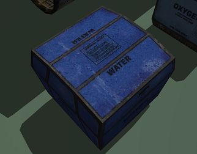
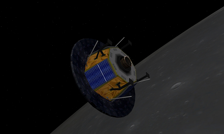

UCGOには様々な種類の貨物コンテナ(cargo)が存在し、これらを基地・宇宙船の補給や建設などに使うことができます。
大気のある惑星で空中投下すると、パラシュートで降下する機能がついています。
| G | コンテナを持つ |
| U | コンテナを開梱する |
| Enter | スイッチを押す |
重要：UCGOに対応している宇宙船しか補給できません。
以下の2種類があります。
どちらも宇宙船などの補給に使うことができます。
CargoBarrelFuel
CargoSpaceFuel
CargoOxygen
CargoSpaceFood
CargoWater

ほとんどの場合、UMMUは食料も水も必要ありませんが、一部のMODではこれらを補給しないとUMMUが死ぬことがあります。
InflatBaseで始まるコンテナを開梱すると、基地を建設することができます。
いくつか種類がありますが、コンテナ表面のイラストを見れば中身がわかるようになっています。
基地の中には酸素が充填されており、宇宙服を脱ぐことができます。
また、UMMUの酸素残量も回復されます。
ユニット同士を結合する機能はないので、近くに置いて、それらしく見えるように並べることになります。
Light（照明）、Solar（太陽電池）、Tankなどのユニットは飾りです。
また、InflatBaseには光源が設定されていないので、夜は真っ暗になります。
どうしても夜使いたい場合は、自動車などの照明で外から照らしてください。
ISRUを開梱すると、自動で膨張して救命ボートになります。※
※使用前に手から離してください。
| E | 中に入る・出る |
| 5 | 冷凍睡眠モードを起動 |
冷凍睡眠モードでは、1人なら1年半、3人なら半年生存できます。
冷凍睡眠に入ったISRUは、宇宙船で直接ドッキングするか、ほかのUMMUがISRU後部のスイッチを押す(Enter)ことで通常モードに戻すことができます。
上記のコンテナに加えて、Flag（国旗）、Rover（無人探査車）、Probe（探査機）などのコンテナを利用できます。
Probeは放出されると自動で軌道を離脱して惑星に着陸します。

日本の国旗を利用する場合は、以下のMODを導入してください。
UCGO Cargo Flags Pack1